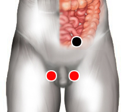

Campylobacter Jejuni
Pares
sigmoides - testículo (D/I)
yeyuno - riñón

Generalidades:
Síntomas gastrointestinales distensión, dolor abdominal, diarrea.
Campylobacter J. es un bacilo gram negativo con uno o dos flagelos; infecta los intestinos causando diarrea acuosa y aguda y trastornos digestivos, cólicos, también se puede presentar vómito, cefalea y malestar general. Ocasionalmente puede haber sangre en la heces. Su periodo de incubación es de 1 a 10 días. Usualmente es controlada por el sistema inmune entre 5 a 8 días sin necesidad de antibióticos. Se recomienda cuidar la hidratación del enfermo.